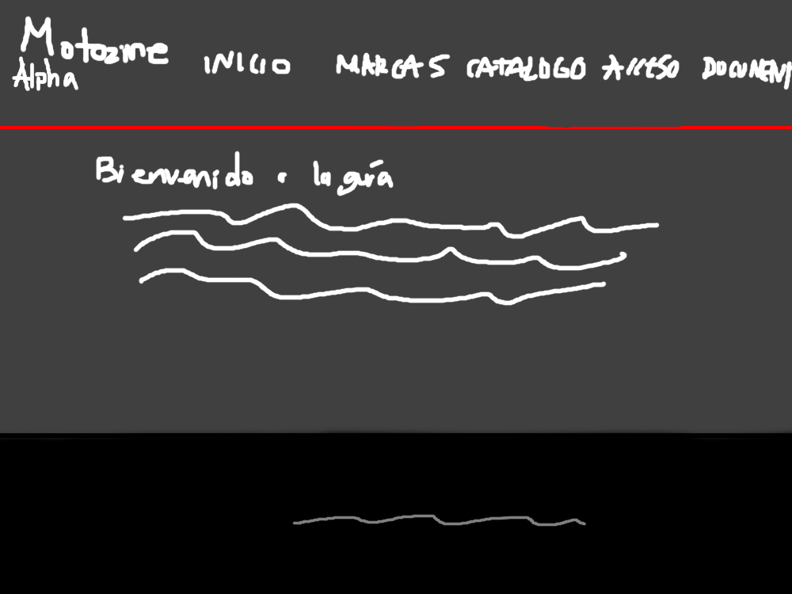
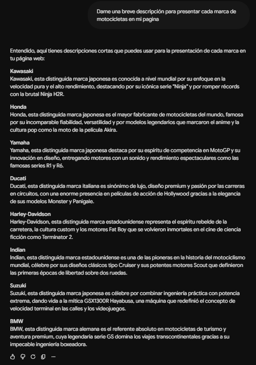
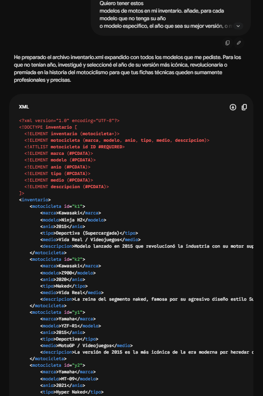
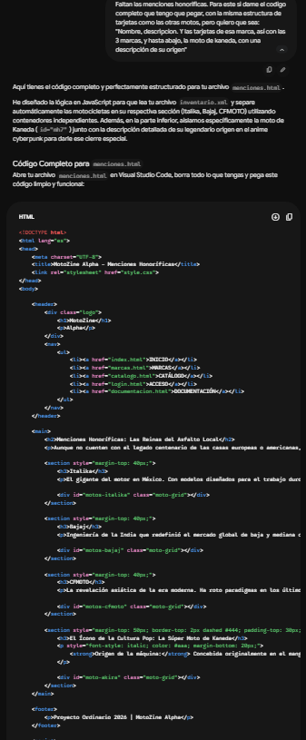
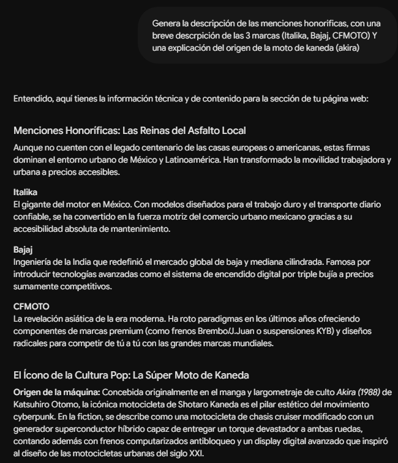
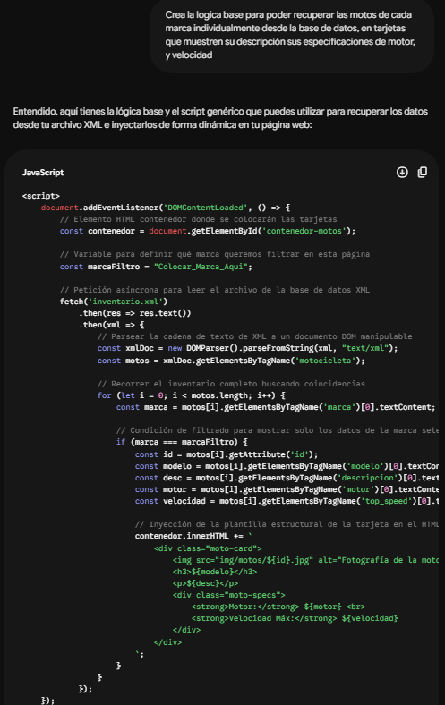
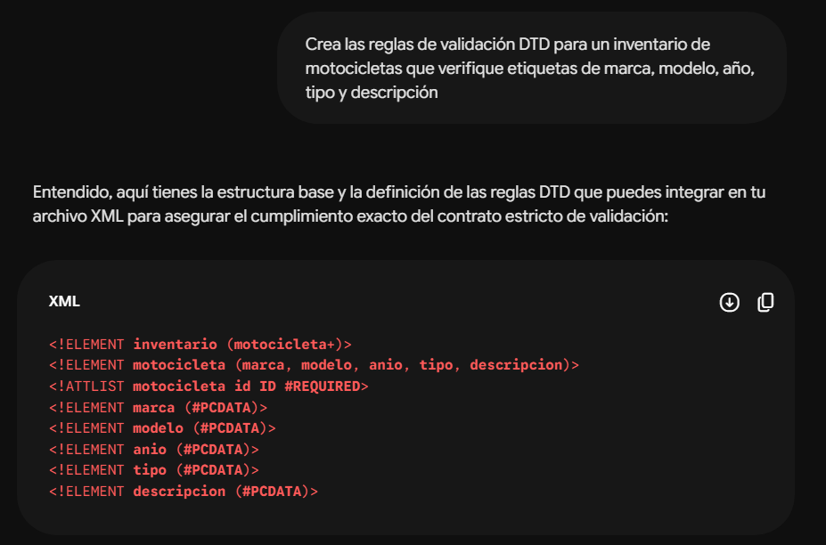

Documentación del Proyecto Ordinario
1. Video de Demostración
Enlace al recorrido funcional del sitio:
Ver video de demostración en YouTube2. Mockups (Bocetos de Diseño)
Aquí se muestran los bocetos iniciales de la maquetación de MotoZine Alpha:

3. Prompts Utilizados
A continuación se muestran los prompts utilizados para generar algun contenido del sitio:





